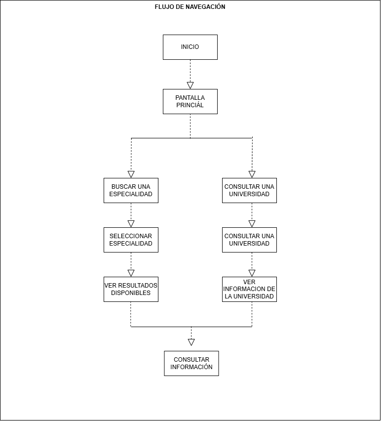
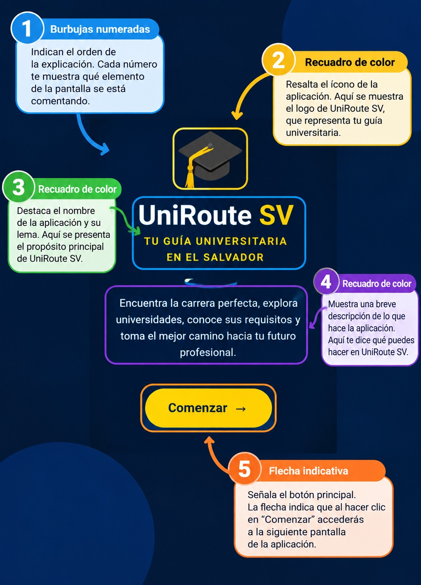

Guía Visual de Navegación y Uso de la Aplicación UniRoute
Bienvenido a la guía de uso de UniRoute SV 2026, una aplicación diseñada para ayudar a los estudiantes de bachillerato a explorar diferentes especialidades profesionales y conocer las universidades de El Salvador donde pueden continuar sus estudios.
Este manual explica paso a paso cómo navegar por la aplicación, seleccionar áreas de interés y consultar la información académica de las instituciones disponibles.
1. Mapa General de Navegación
A continuación, se presenta el recorrido general de las pantallas de UniRoute, desde la pantalla de inicio hasta la consulta de las especialidades y la información de las universidades.

La navegación permite al usuario explorar las opciones disponibles, seleccionar una especialidad y consultar los datos de las universidades relacionadas con sus intereses académicos.
2. Pantalla de Inicio de UniRoute
Al abrir la aplicación, se muestra la pantalla de bienvenida de UniRoute SV 2026, que permite al usuario ingresar al directorio académico y comenzar a explorar las opciones disponibles.

- Nombre de la aplicación: Identifica el sistema como UniRoute SV 2026.
- Acceso al directorio académico: Permite ingresar a las opciones de consulta de la aplicación.
- Navegación principal: Facilita el acceso a las secciones disponibles para explorar especialidades y universidades.
3. Exploración de Especialidades Profesionales
UniRoute permite explorar diferentes áreas profesionales para que los estudiantes identifiquen opciones relacionadas con sus intereses y aspiraciones académicas.
- Selección de especialidad: Elige el área profesional que deseas conocer.
- Filtrado de información: Utiliza las categorías disponibles para visualizar las opciones relacionadas con la especialidad seleccionada.
- Consulta de carreras: Revisa las carreras y los tipos de formación disponibles dentro de cada área.
- Comparación de opciones: Explora las alternativas académicas que pueden ayudarte a decidir qué estudiar.
Entre las áreas disponibles se encuentran Gastronomía, Medicina, Leyes, Idiomas, Aeronáutica, Automotriz, Administración y Tecnología.
4. Consulta de Universidades
Después de explorar las especialidades, el usuario puede consultar las instituciones educativas incluidas en el directorio de UniRoute.
- Listado de universidades: Explora las instituciones disponibles en la aplicación.
- Selección de una universidad: Elige la institución sobre la que deseas obtener más información.
- Consulta de carreras: Revisa la carrera o especialidad asociada con la institución.
- Revisión de la modalidad y duración: Consulta los datos disponibles sobre la modalidad de estudio y el tiempo de formación.
- Información de ubicación: Identifica el departamento, municipio o dirección registrada de la institución.
Esta función facilita la búsqueda de alternativas educativas de acuerdo con los intereses y las necesidades del estudiante.
5. Consulta de Información y Contacto
UniRoute reúne información útil para que los estudiantes conozcan mejor las instituciones educativas y puedan investigar sus opciones de formación.
- Nombre de la institución: Identifica la universidad o centro educativo seleccionado.
- Carrera y tipo de formación: Consulta la información académica disponible, incluyendo si la formación es técnica o de ingeniería cuando corresponda.
- Ubicación y dirección: Revisa los datos de localización de la institución.
- Información de contacto: Consulta el número telefónico y los medios de contacto registrados.
- Sitio web: Si está disponible, utiliza el enlace para obtener información adicional directamente de la institución.
- Beneficios y comodidades: Revisa los servicios, las comodidades y la información sobre becas que se encuentre registrada.
Nota: La disponibilidad y exactitud de estos datos dependen de la información incorporada en el directorio de UniRoute.
6. Video Tutorial de UniRoute
En esta sección se presenta un video tutorial que permite observar el funcionamiento de la aplicación y comprender cómo utilizar sus principales herramientas.
El video muestra el proceso de navegación por UniRoute, la exploración de las especialidades profesionales y la consulta de la información de las universidades.
Video tutorial de UniRoute:
Ver video tutorial de UniRoute
7. Recomendaciones para el Usuario
- Explora diferentes especialidades antes de elegir una carrera.
- Revisa la información de varias instituciones educativas para conocer las alternativas disponibles.
- Verifica directamente con la universidad los requisitos de ingreso, los costos y los planes de estudio.
- Utiliza los datos de contacto y los sitios web disponibles para ampliar la información.
- Considera tus intereses, habilidades y metas profesionales al tomar una decisión académica.
8. Conclusión
UniRoute SV 2026 es una herramienta de orientación académica que facilita la exploración de especialidades profesionales y la consulta de universidades de El Salvador. Mediante su directorio, los estudiantes pueden conocer diferentes alternativas educativas, revisar información relevante y contar con una referencia para tomar decisiones sobre su futuro académico y profesional.